Een voorbeeld van datavisualisatie: Trends op het gebied van de wereldgezondheid en de economie
In dit deel laten we zien hoe relatief eenvoudig de ggplot -code inzichtelijke en esthetisch aangename plots kan maken die ons helpen trends in de wereldgezondheid en economie beter te begrijpen. Later breiden we de code iets uit om de plots te perfectioneren en beschrijven we enkele algemene principes als leidraad voor datavisualisatie.
Hans Rosling was medeoprichter van de Gapminder Foundation, een organisatie die het publiek wil stimuleren om gegevens te gebruiken om veelvoorkomende mythes over de zogenaamde ontwikkelingswereld te verdrijven. De organisatie gebruikt gegevens om aan te tonen hoe de daadwerkelijke tendensen in gezondheid en economie de verhalen tegenspreken die van de media komen en sensationeel berichten over catastrofes, tragedies en andere ongelukkige gebeurtenissen, zoals die op de website van de Gapminder Foundation staan.
Journalisten en lobbyisten vertellen dramatische verhalen. Dat moeten ze want dat is hun taak. Ze vertellen verhalen over bijzondere gebeurtenissen en ongewone mensen. De stapels dramatische verhalen die een al te dramatisch wereldbeeld vormen en zorgen voor sterke negatieve stressgevoelens: “De wereld wordt erger”, “Wij vs. zij! , ,,Andere mensen zijn vreemd”, “De bevolking blijft maar groeien” en “Het maakt niemand wat uit”!
Hans Rosling bracht actuele data-gebaseerde trends op een eigen dramatische manier over aan de hand van effectieve datavisualisatie. Dit hoofdstuk is gebaseerd op twee gesprekken die deze benadering van onderwijs illustreren: Nieuwe inzichten in armoede en De beste Statistiek die je gezien hebt.
In deze paragraaf willen we aan de hand van gegevens een antwoord geven op de volgende twee vragen:
Is het een eerlijke typering van de wereld van vandaag om te zeggen dat ze verdeeld is in westerse rijke naties en de ontwikkelingslanden in Afrika, Azi? en Latijns-Amerika?
Is de inkomensongelijkheid tussen landen de afgelopen 40 jaar toegenomen?
Om deze vraag te beantwoorden zullen we gebruik maken van de gapminder dataset in dslabs. Deze dataset is gemaakt met behulp van een aantal spreadsheets die beschikbaar zijn bij de Stichting [Gapminder] (http://www.gapminder.org/). U kunt op deze manier toegang krijgen tot de tafel:
library(dslabs)
data(gapminder)
head(gapminder)
country year infant_mortality life_expectancy fertility
1 Albania 1960 115.40 62.87 6.19
2 Algeria 1960 148.20 47.50 7.65
3 Angola 1960 208.00 35.98 7.32
4 Antigua and Barbuda 1960 NA 62.97 4.43
5 Argentina 1960 59.87 65.39 3.11
6 Armenia 1960 NA 66.86 4.55
population gdp continent region
1 1636054 NA Europe Southern Europe
2 11124892 13828152297 Africa Northern Africa
3 5270844 NA Africa Middle Africa
4 54681 NA Americas Caribbean
5 20619075 108322326649 Americas South America
6 1867396 NA Asia Western AsiaZoals gedaan in de New Insights on Poverty video, beginnen we met het testen van onze kennis over verschillen in kindersterfte tussen verschillende landen.
Voor elk van de zes onderstaande paren landenparen, willen we weten welk land volgens u de hoogste kindersterfte in 2015 had? Welke paren lijken volgens jou het meest op elkaar?
Wanneer deze vragen zonder gegevens worden beantwoord, worden de niet-Europese landen doorgaans gekozen als landen met hogere sterftecijfers: Sri Lanka boven Turkije, Zuid-Korea boven Polen en Maleisi? boven Rusland. Ook in landen die als ontwikkelingslanden worden beschouwd, Pakistan, Vietnam, Thailand en Zuid-Afrika, is het sterftecijfer even hoog.
Om deze vragen __ met data__ te beantwoorden kunnen we het R-pakket dplyr gebruiken. Voor de eerste vergelijking zien we bijvoorbeeld dat
country infant_mortality
1 Sri Lanka 8.4
2 Turkey 11.6Turkije heeft een hogere score.
We kunnen deze code op alle vergelijkingen plakken en dan zien we het volgende:
| country | infant_mortality | country1 | infant_mortality1 |
|---|---|---|---|
| Sri Lanka | 8.4 | Turkey | 11.6 |
| Poland | 4.5 | South Korea | 2.9 |
| Malaysia | 6.0 | Russia | 8.2 |
| Pakistan | 65.8 | Vietnam | 17.3 |
| Thailand | 10.5 | South Africa | 33.6 |
We zien dat de Europese landen hogere cijfers hebben: Polen heeft een hoger percentage dan Zuid-Korea en Rusland een hoger percentage dan Maleisi?. We zien ook dat Pakistan een veel hoger percentage heeft dan Vietnam en Zuid-Afrika een veel hoger percentage dan Thailand. Het blijkt dat de meeste mensen het slechter doen dan wanneer ze zouden raden. We lijken wel onwetend zijn en we zijn verkeerd ge?nformeerd.
De reden hiervoor is het idee dat de wereld in twee groepen te verdelen is: de Westerse wereld (West-Europa en Noord-Amerika), met z’n lange levensduur en kleine gezinnen, tegenover de ontwikkelingslanden (Afrika, Azi? en Latijns-Amerika), gekenmerkt door een korte levensduur en grote gezinnen. Maar rechtvaardigen de gegevens deze dichotomie van twee groepen wel?
De nodige gegevens om deze vraag te beantwoorden zitten ook in onze gapminder tabel. Met behulp van onze nieuw aangeleerde vaardigheden om data te visualiseren, zullen we in staat zijn om deze vraag te beantwoorden.
De eerste plot die we maken om te zien wat de gegevens zeggen over dit wereldbeeld is een spreidingplot van levensverwachting versus vruchtbaarheidscijfers (gemiddeld aantal kinderen per vrouw). We kijken eerst naar gegevens van zo’n vijftig jaar geleden, toen dit standpunt misschien nog te rechtvaardigen was.
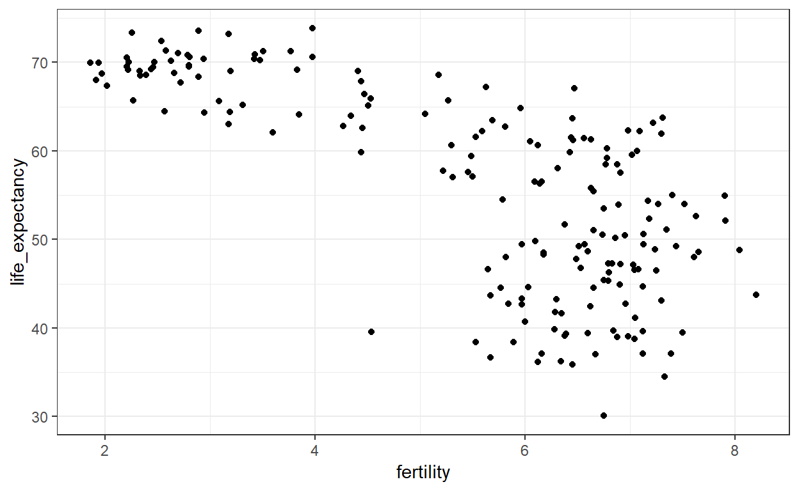
De meeste punten vallen in twee verschillende categorie?n uiteen:
Om te bevestigen dat de landen inderdaad afkomstig zijn uit de regio’s die wij verwachten, kunnen wij kleur gebruiken om het continent te vertegenwoordigen.
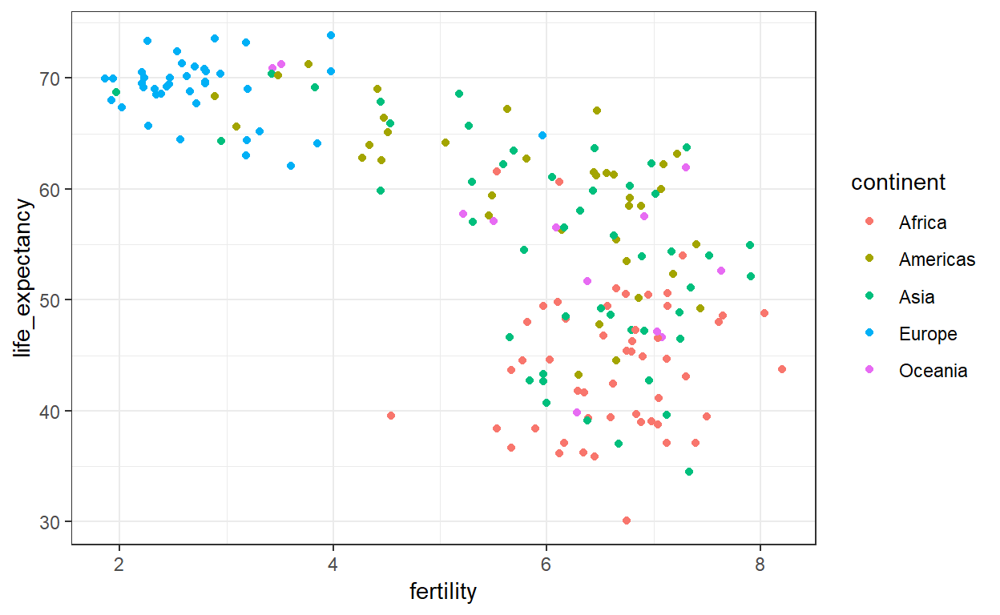
Dus de visie in 1962, “het westen versus de ontwikkelingslanden”, was gebaseerd op een of andere realiteit. Maar is dat 50 jaar later nog steeds het geval?
We konden de gegevens voor 2012 gemakkelijk in kaart brengen op dezelfde manier als voor 1962. Maar om de gegevens te vergelijken, kunnen we de inzichten het beste naast elkaar zetten. In ggplot kunnen we dit doen met’ faceting variabelen’: we stratificeren de gegevens met een of andere variabele en maken dezelfde plot voor elke groep.
Om te facetteren (ik weet niet of het een Nederlands woord is, maar goed) voegen we een laag toe met de functie facet_grid, die automatisch de groepen scheidt. Met deze functie kunt u maximaal twee variabelen facetteren met behulp van kolommen om de ene variabele weer te geven en rijen om de andere weer te geven. De functie verwacht de rij- en kolomvariabelen die door een ~ van elkaar zijn gescheiden. Hier is een voorbeeld van een verstrooiingsplot met een facet_grid als laatste laag toegevoegd:
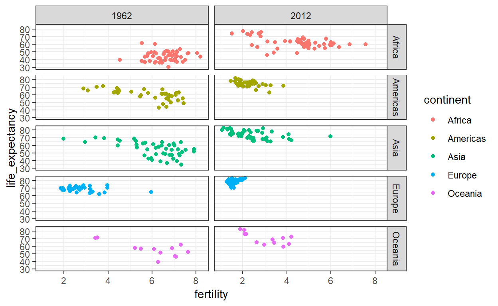
We zien een plot voor elk continent/jaarpaar. Maar dit is slechts een voorbeeld en is al meer dan wat we willen, want dat is gewoon om 1962 en 2012 te vergelijken. In dit geval is er maar ??n variabele en gebruiken we . om de facet te laten weten dat we geen van de variabelen gebruiken:
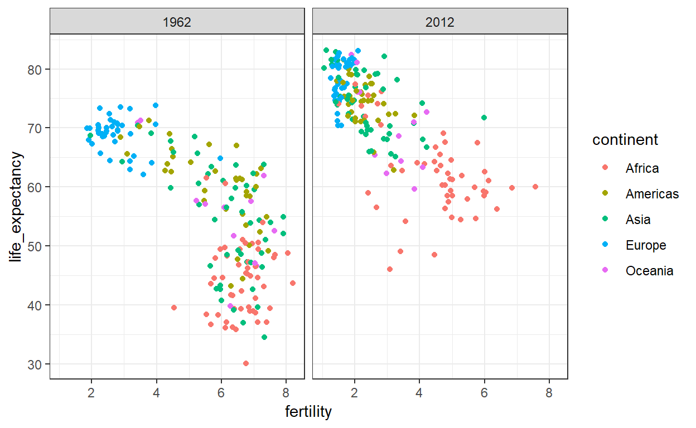
Deze plot laat duidelijk zien dat de meerderheid van de landen zich heeft ontwikkeld van ontwikkelingslandcluster naar het ontwikkeldlandcluster. In 2012 heeft het oude perspectief geen zin meer. Dit wordt vooral duidelijk bij een vergelijking van Europa en Azi?, want vooral binnen dat laatste continent zijn er verschillende landen waarbinnen grote verbeteringen hebben doorgevoerd.
facet_wrapOm te onderzoeken hoe deze transformatie door de jaren heen is gegaan, kunnen we het perceel voor meerdere jaren maken. We kunnen bijvoorbeeld 1970, 1980, 1990, 2000 toevoegen. Als we dit doen, willen we niet dat alle percelen op dezelfde rij staan, het standaard gedrag van facet_grid, omdat ze te dun worden om de gegevens weer te geven. In plaats daarvan zullen we meerdere rijen en kolommen gebruiken. Dat kan met de functie facet_wrap , waarmee automatisch een reeks percelen onstaat met ded juiste afmetingen:
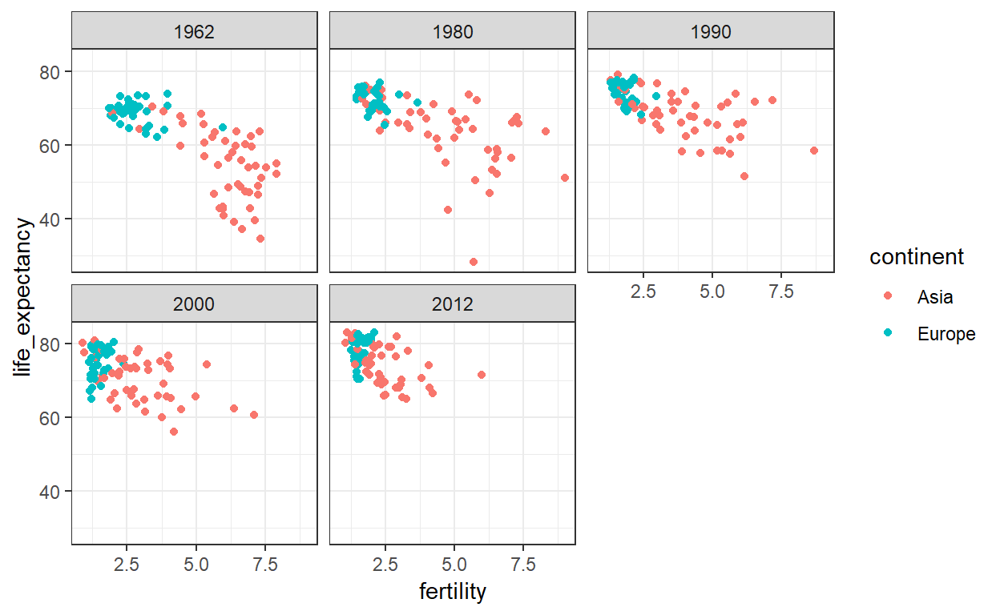
Dit plot toont duidelijk aan hoe de meeste Aziatische landen zich veel sneller hebben verbeterd dan de Europese.
Merk op dat de standaard keuze van het bereik van de assen een belangrijke is. Wanneer geen facet' wordt gebruikt, wordt het bereik bepaald door de gegevens die in de grafiek worden getoond. Bij gebruik vanfacet’ wordt dit bereik bepaald door de gegevens die op alle percelen worden weergegeven en wordt het dus voor alle percelen vastgehouden. Dit maakt vergelijkingen tussen percelen veel gemakkelijker. In bovenstaand perceel zien we bijvoorbeeld dat de levensverwachting in de meeste landen is gestegen en de vruchtbaarheid is afgenomen. We zien dit omdat de puntenwolk beweegt. Dit is niet het geval als we de schalen aanpassen:
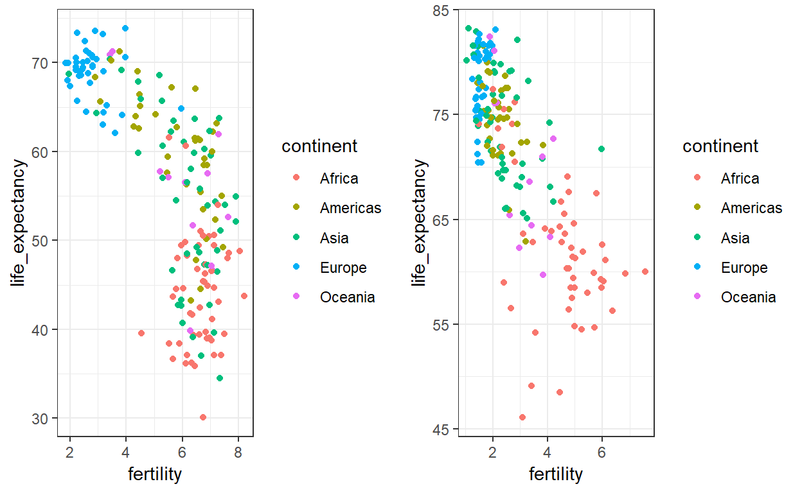
In de plot hierboven moeten we speciale aandacht besteden aan het bereik om op te merken dat de rechter plot aan de rechter kant een grotere levensverwachting vertoont.
Met het gganimate pakket kunt u eenvoudig facetten omzetten in een animatie:
Bovenstaande visualisaties laten duidelijk zien dat data het oude beeld van het westen tegenover ontwikkelingslanden niet meer ondersteunen. Als we deze figuren eenmaal hebben gezien, rijzen er nieuwe vragen. Welke landen verbeteren bijvoorbeeld meer en welke minder? Was de verbetering de afgelopen 50 jaar constant of was er in bepaalde perioden sprake van een versnelling? Om deze vraag beter te kunnen beantwoorden, gaan we dieper in op de tijdreeksfiguren.
In tijdreeksfiguren staat tijd op de x-as en een uitkomst of meting die van belang is op de y-as. Hier is bijvoorbeeld een trendfiguur voor de vruchtbaarheidscijfers van Nederland:
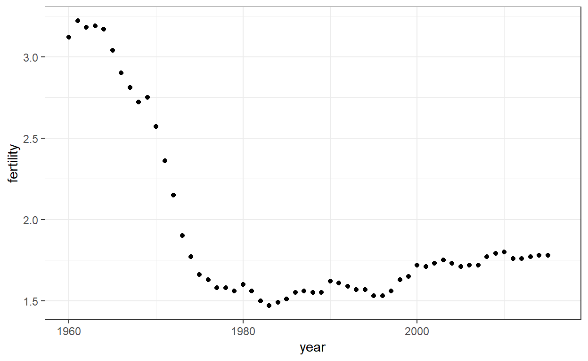
We zien dat de trend helemaal niet lineair is. In plaats daarvan zien we een scherpe daling tijdens de jaren ’60 en ’70 naar onder de 2. Dan komt de trend terug op 2 en stabiliseert zich tijdens de jaren ’90.
Wanneer de punten regelmatig en dicht op elkaar liggen, zoals hier, maken we krommen door de punten als lijnen met elkaar te verbinden om aan te geven dat deze gegevens uit ??n land afkomstig zijn. Hiervoor gebruiken we de functie geom_line in plaats van geom_point.
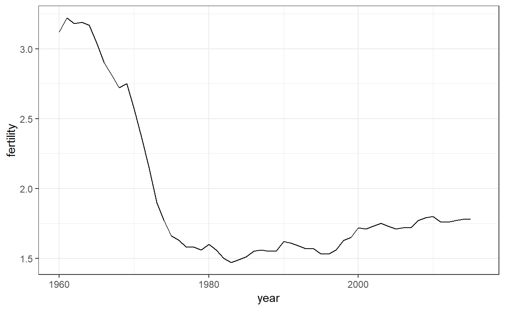
Dit is met name nuttig wanneer we naar twee landen kijken. Als we de gegevens zo onderverdelen in twee landen, ??n uit Europa en ??n uit Azi?, dan kopieer je de gegevens naar de bovenstaande code:
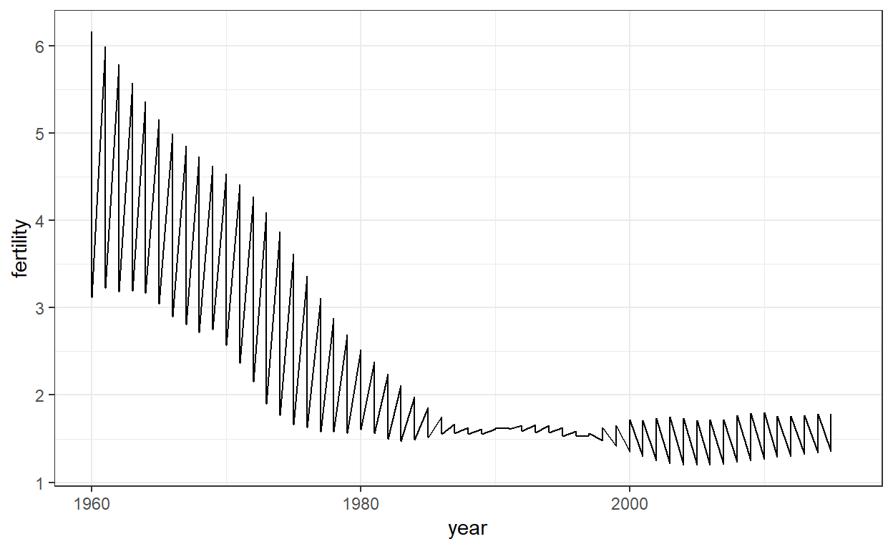
Merk op dat dit niet de figuur is die we willen. In plaats van een lijn voor elk land, worden de punten voor beide landen samengevoegd. Dit wordt eigenlijk verwacht omdat we ggplot niets hebben verteld over het willen hebben van twee aparte lijnen. Om ggplot te laten weten dat we twee afzonderlijke curven willen hebben, wijzen we elk punt toe aan een ‘groep’, ??n voor elk land:
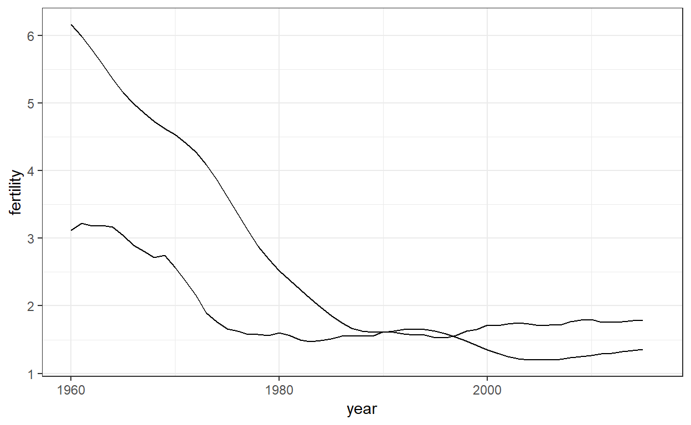
Maar welke lijn gaat over welk land? We kunnen kleuren toewijzen om dat onderscheid te maken. Een nuttig neveneffect van het gebruik van het ‘kleur’-argument om verschillende kleuren toe te wijzen aan de verschillende landen, is dat de gegevens automatisch worden gegroepeerd:
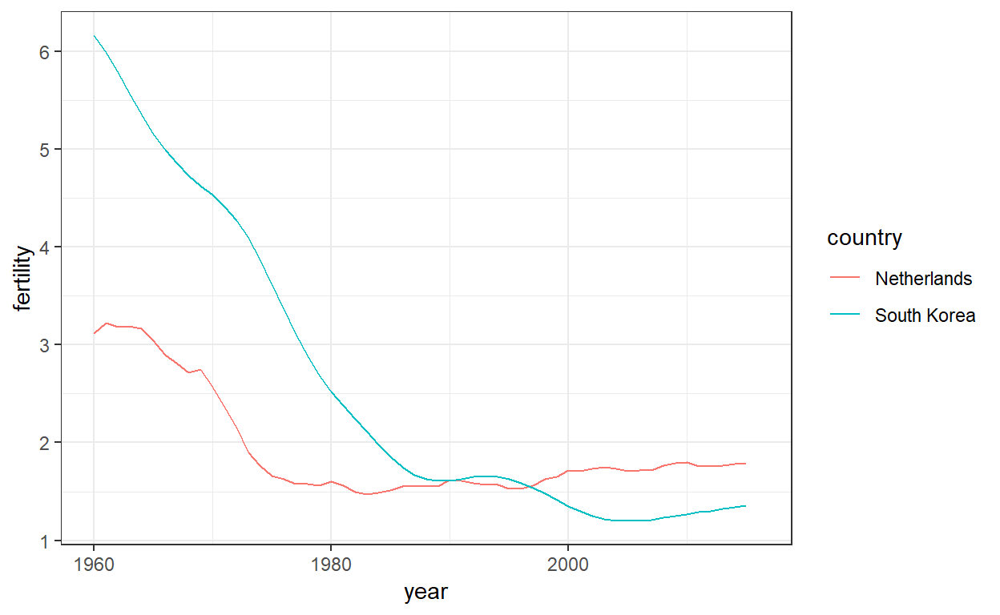
Uit het perceel blijkt duidelijk dat het vruchtbaarheidscijfer van Zuid-Korea in de jaren ’60 en ’70 drastisch is gedaald en in 1990 even hoog was als in Duitsland.
Voor trendplots raden we aan om de lijnen te labelen in plaats van legenda’s te gebruiken omdat de kijker snel kan zien welke lijn welk land is. Deze suggestie is eigenlijk van toepassing op de meeste figuren: labeling heeft meestal de voorkeur boven legenda’s.
Aan de hand van de gegevens over de levensverwachting laten we zien hoe we dit kunnen doen. We defini?ren een datatabel met de labellocaties en gebruiken dan een tweede mapping alleen voor deze labels:
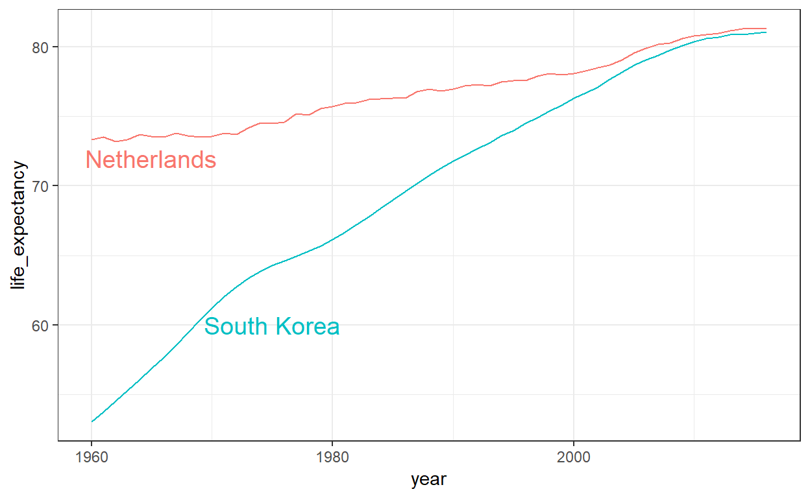
De figuur toont duidelijk aan hoe een verbetering van levensverwachting de dalingen in vruchtbaarheidscijfers volgde. Terwijl de Duitsers in 1960 meer dan 15 jaar meer Zuid-Koreanen woonden, is de kloof in 2010 volledig gedicht. Het is een voorbeeld van de verbetering die veel niet-westerse landen in de afgelopen veertig jaar hebben bereikt.
Een andere veelgehoorde opmerking is dat de verdeling van de welvaart over de wereld de laatste decennia is verslechterd. Wanneer het algemene publiek wordt gevraagd of arme landen armer zijn geworden en rijke landen rijker, antwoordt de meerderheid ja. Door gebruik te maken van stratificatie, histogrammen, vloeiende verdeling en boxplots zullen we in staat zijn om te begrijpen of dit inderdaad het geval is. We leren dan ook hoe transformaties soms kunnen helpen om meer informatieve samenvattingen en figuren aan te bieden.
De `gapminder’-gegevenstabel bevat een kolom met het bruto binnenlands product (BBP) van de landen. Het BBP meet de marktwaarde van de goederen en diensten die een land in een jaar produceert. Het BBP per persoon wordt vaak gebruikt als een ruwe samenvatting van hoe rijk een land is. Hier delen we deze hoeveelheid door 365 om de meer interpreteerbare maat dollars per dag te krijgen. Wanneer we de huidige US-dollar als eenheid gebruiken, wordt een persoon die met een inkomen van minder dan $ 2 per dag overleeft, gedefinieerd als een persoon die in absloute armoede leeft. Deze variabele voegen we toe aan de datatabel:
Merk op dat de BBP-waarden zijn gecorrigeerd voor inflatie en staan voor de huidige US-dollar. Dus deze waarden zijn bedoeld om over de jaren heen vergelijkbaar te zijn. Merk ook op dat het hier om landsgemiddelden gaat en dat er binnen elk land veel variatie is. Alle hieronder beschreven grafieken en inzichten hebben betrekking op landsgemiddelden en staan dus niet individuele personen.
Hier is een histogram van de inkomens per dag uit 1970:
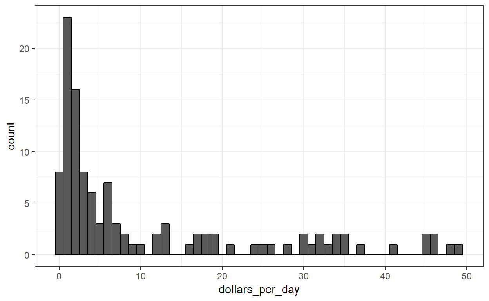
We gebruiken het color = "black" om een grens te trekken en de bins (‘bakjes’) duidelijk van elkaar te onderscheiden.
In dit diagram zien we dat voor de meeste landen gemiddelden zijn onder $10 per dag. Het grootste deel van de x-as is echter gewijd aan de 35 landen met gemiddelden boven $10. De grafiek is dus niet erg informatief over landen met waarden onder $10 per dag.
Het is misschien informatiever om snel te kunnen zien hoeveel landen een gemiddeld daginkomen hebben van ongeveer $1 (extreem arm), $2 (zeer arm), $4 (arm), $8 (midden), $16 (welgesteld), $32 (rijk), $64 (zeer rijk) per dag. Deze veranderingen zijn vermenigvuldigend en logtransformaties.
Hier is de verdeling als we een log2 transformatie toepassen:In zekere zin geeft dit een close up van de landen met een gemiddeld tot lager inkomen.
In het bovenstaande geval hebben we basis 2 gebruikt in de log-transformaties. Andere veelvoorkomende keuzes zijn basis \(e\) (de natuurlijke log) en basis 10.
Over het algemeen raden wij het gebruik van het natuurlijke logboek voor het verkennen en visualiseren van gegevens aan.Dit is omdat \(2^2, 2^3, 2^4, \dots\) or \(10^1, 10^2, \dots\) makkelijk zijn te berekenen in ons hoofd. Hetzelfde geldt niet voor \(\mathrm{e}^2, \mathrm{e}^3, \dots\).
In het voorbeeld dollars per dag gebruikten we basis 2 in plaats van basis 10 omdat het resulterende bereik gemakkelijker te interpreteren is. Het bereik van de waarden die worden uitgezet is 0.3269426, 48.8852142.
In basis 10 verandert dit in een bereik dat zeer weinig gehele getallen omvat: slechts 0 en 1. Met basis twee omvat ons assortiment -2, -1, 0, 1, 2, 3, 4 en 5. Het is gemakkelijker om \(2^x\) en \(10^x\) te berekenen wanneer \(x\) een geheel getal is en tussen -10 en 10 ligt. Dus geven we de voorkeur aan meer kleine gehele getallen in de schaal. Een ander gevolg van een beperkt bereik is dat het kiezen van de ‘bin’-breedte een grotere uitdaging is. Met log base 2 weten we dat een ‘bin’-breedte van 1 zal vertalen naar een bin met bereik van \(x\) tot \(2x\).
Als voorbeeld waarbij basis 10 zinvoller is, overweeg dan de populatiegrootte. Een logbasis 10 is zinvoller omdat het bereik hiervoor ongeveer 1000 tot 10 miljard is. Hier is het histogram van de getransformeerde waarden:
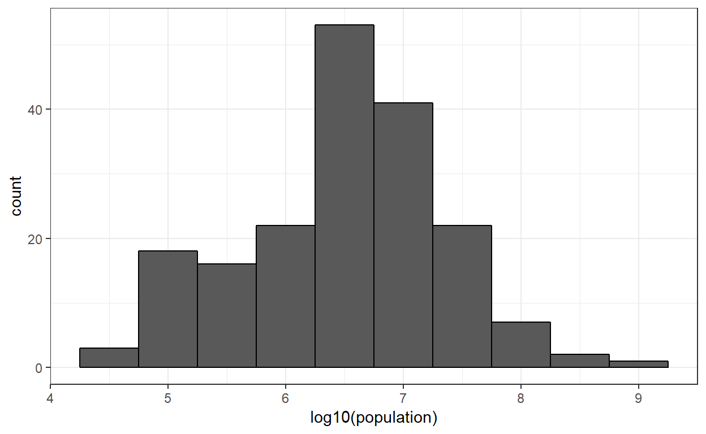
Hier zien we al snel dat de bevolking van een land varieert tussen de tienduizend en tien miljard.
Er zijn twee manieren waarop we log-transformaties in grafieken kunnen gebruiken. We kunnen de waarden loggen voordat we ze plotten of gebruik maken van logschalen in de assen. Beide benaderingen zijn nuttig en hebben verschillende sterke punten. Als we de gegevens loggen, kunnen we gemakkelijker tussenliggende waarden interpreteren in de schaal. Bijvoorbeeld als we zien
—-1—-x—-2——–3—-
voor log getransformeerde gegevens weten we dat de waarde van \(x\) is ongeveer 1,5. Als de weegschalen gelogd zijn
—-1—-x—-10——100—
om x te bepalen, moeten we \(10^{1.5}\) berekenen. Dat is niet gemakkelijk te doen in onze hoofden. Het voordeel van het tonen van gelogde schalen is echter dat de originele waarden worden weergegeven in de plot, die gemakkelijker te interpreteren zijn. Bijvoorbeeld, we zouden “32 dollar per dag” zien in plaats van “5 log basis 2 dollar per dag”.
Zoals we eerder leerden, als we de as willen schalen met logs kunnen we de functie ‘schaal_x_ccontinue’ gebruiken. Dus in plaats van eerst de waarden te loggen, passen we deze laag toe:
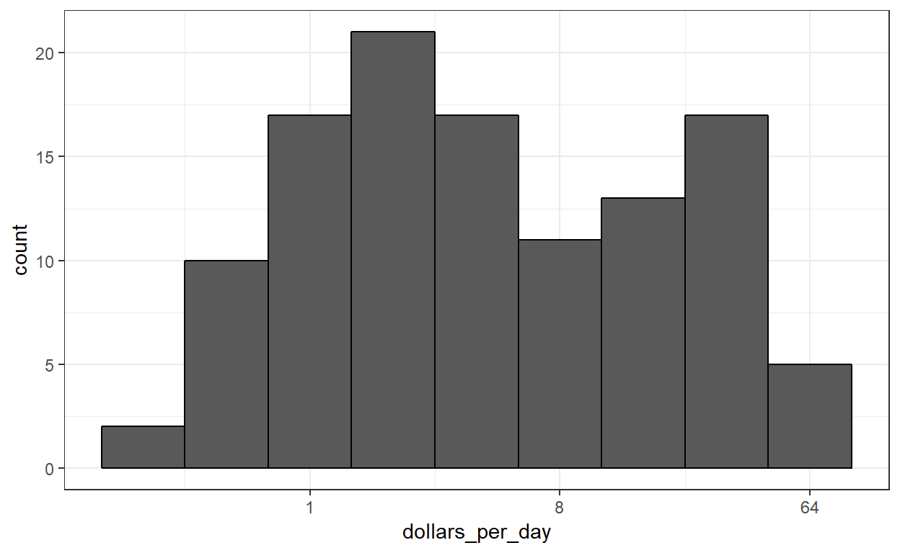
Merk op dat de log base 10 transformatie zijn eigen functie heeft: scale_x_log10(), maar momenteel base 2 niet. Hoewel we dit zelf gemakkelijk konden defini?ren.
Merk op dat er andere transformatie beschikbaar zijn via het trans argument. Zoals we later leren, is bijvoorbeeld de vierkantsworteltransformatie (sqrt) nuttig bij het tellen. De logistieke transformatie (logit) is nuttig bij het plotten van proporties tussen 0 en 1. De omgekeerde transformatie is nuttig als we willen dat kleinere waarden rechts of bovenop staan.
In de statistieken wordt deze hobbel ook wel modus genoemd. De modus van een verdeling is de waarde met de hoogste frequentie. De modus van de normale verdeling is het gemiddelde. Wanneer een distributie, zoals de bovenstaande, niet eentonig afneemt van de modus, noemen we de locaties waar het op en neer gaat weer lokale modi en zeggen dat de distributie meerdere modi heeft.
Het histogram hierboven suggereert dat de inkomensverdeling van het land in 1970 twee modi kent: ??n met ongeveer 2 dollar per dag (1 in de log 2 schaal) en ??n met ongeveer 32 dollar per dag (5 in de log 2 schaal). Deze bimodaliteit is consistent met een dichotome wereld die bestaat uit landen met een gemiddeld inkomen van minder dan $8 (3 in de log 2 schaal) per dag en landen daarboven.
Het histogram liet zien dat de inkomensverdelingswaarden een tweedeling vertonen. Het histogram laat echter niet zien of de twee groepen landen west tegenover de ontwikkelings wereld zijn.
Om de verdeling naar geografische regio te zien, stratificeren we eerst de gegevens naar regio’s en onderzoeken we vervolgens de verdeling voor elke regio.
[1] 22Vanwege het aantal regio’s zijn histogrammen of gladde dichtheden voor elk niet nuttig. In plaats daarvan kunnen we boxplots naast elkaar stapelen:
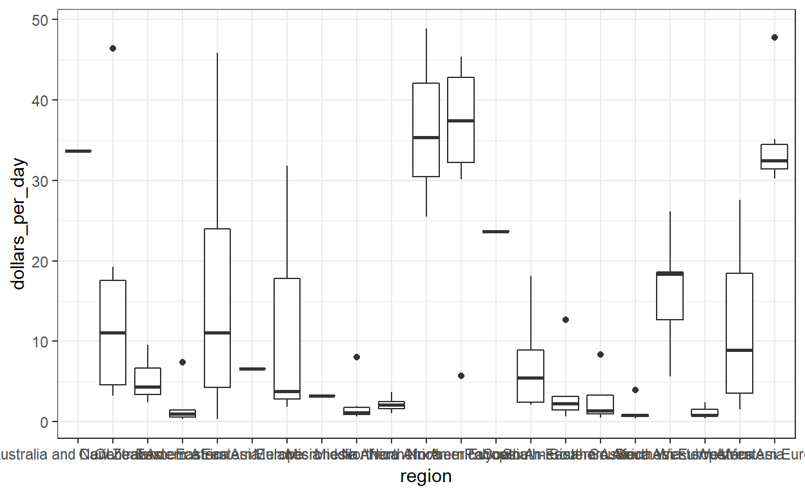
Merk op dat we de regionamen niet kunnen lezen omdat het standaard ggplot-gedrag is om de labels horizontaal te schrijven en hier lopen we dan de ruimte uit. We kunnen dit eenvoudig repareren door de etiketten te draaien. In de sheetuitleg vinden we dat we de namen kunnen roteren door het thema te veranderen via element_text. Het just=1 zorgt ervoor dat deze zich naast de as bevindt.
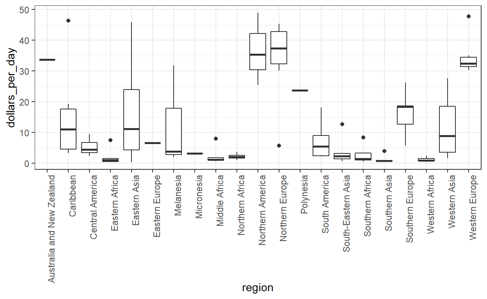
We zien nu dat er inderdaad een tweedeling is tussen het westen en de rest.
Er zijn nog een paar aanpassingen die we kunnen maken om in de grafiek deze realiteit beter bloot te leggen. Ten eerste helpt het om de regio’s in de boxplots te ordenen van arm naar rijk in plaats van alfabetisch. Dit kan worden gedaan met behulp van de reorder functie. Deze functie laat ons de orde van de niveaus van een factorvariabele op basis van een samenvatting veranderen die op een numerieke vector wordt berekend. Een karaktervector wordt in een factor gedwongen:
Hieronder staat een voorbeeld. Merk op hoe de volgorde van de niveaus verandert:
[1] "Asia" "West"
[1] "West" "Asia"Ten tweede kunnen we kleur gebruiken om de verschillende continenten te onderscheiden, een visuele kleurschakering die helpt om specifieke regio’s te vinden. Hier is de code:
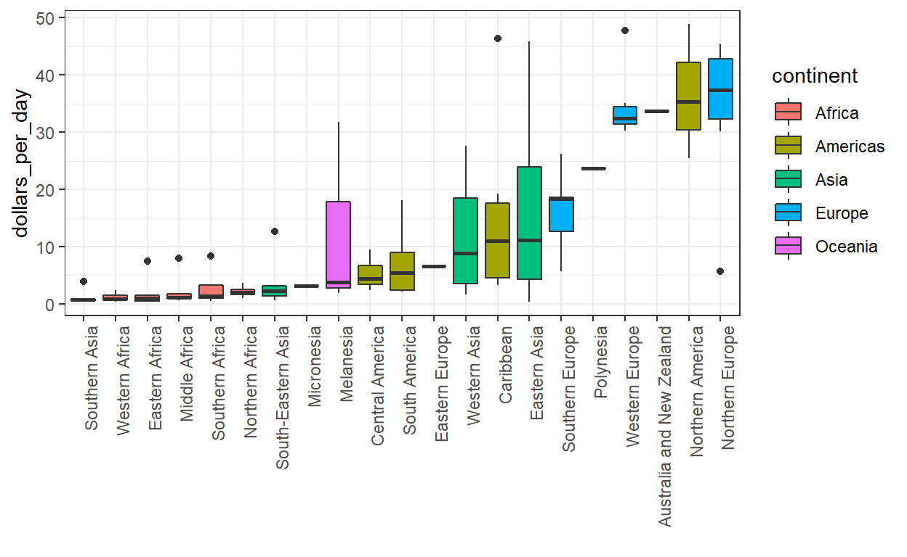
Dit figuur toont twee duidelijke groepen, met de rijke groep bestaande uit Noord-Amerika, Noord- en West-Europa, Nieuw-Zeeland en Australi?. Net als met het histogram, als we de plot herschikken met behulp van een logschaal zijn we in staat om verschillen binnen de deconcentratiewereld beter te zien.
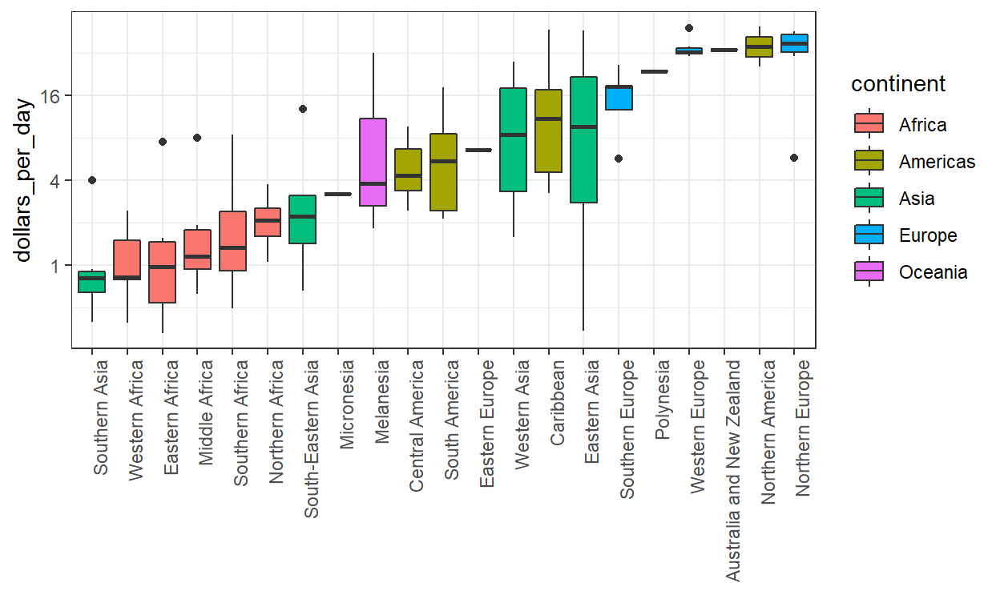
In veel gevallen tonen we de gegevens niet omdat het rommel aan het figuur toevoegt en het bericht vertroebelt. In bovenstaand voorbeeld hebben we niet zoveel punten. Dan kunnen deze laag toevoegen met behulp van geom_point() en door punten toe te voegen kunnen we eigenlijk alle gegevens zien
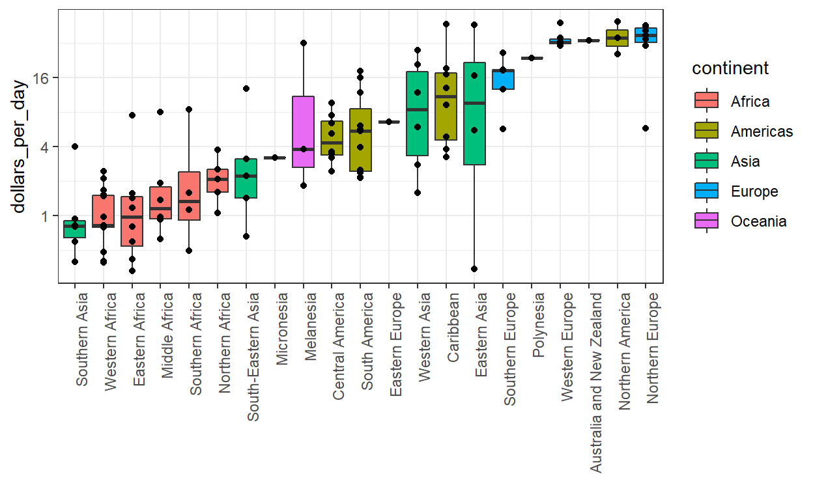
De bovenstaande verkennende gegevensanalyse heeft twee kenmerken van de gemiddelde inkomensverdeling in 1970 aan het licht gebracht. Aan de hand van een histogram vonden we een bimodale verdeling met de modi voor arme en rijke landen. Door in het onderzoek stratificatie per regio toe te passen zagen we met boxplots dat de rijke landen meestal in Europa, Noord-Amerika, Australi? en Nieuw-Zeelandm lagen. Met deze regio’s defini?ren we een vector:
Nu willen we ons richten op het vergelijken van de verschillen in verdelingen in de tijd.
We bevestigen eerst de bimodaliteit die we in 1970 waarnamen en dat deze wordt verklaard door de westelijk tegenover de ontwikkelingswereld- dichotomie. Dit doen we door histogrammen te maken voor de groepen die we hebben ge?dentificeerd. Merk op dat we de twee groepen maken met ifelse binnen een mutaat en dat we facet_grid gebruiken om een histogram te maken voor elke groep:
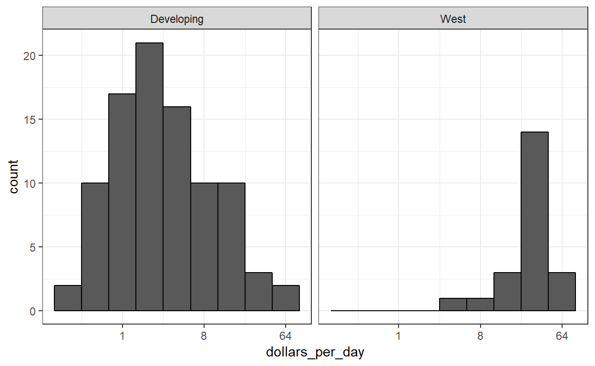
Nu kunnen we kijken of de scheiding vandaag de dag slechter is dan veertig jaar geleden. Dit doen we door zowel per regio als per jaar te facetteren:
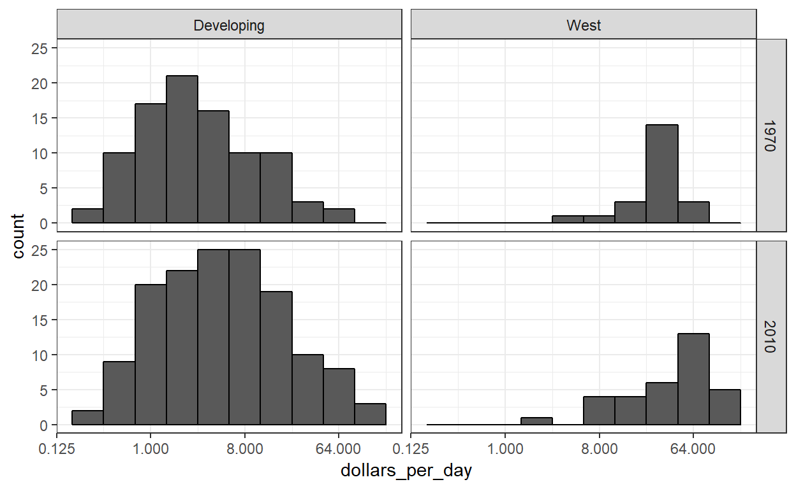
Voordat we de bevindingen van deze plot interpreteren, stellen we vast dat er meer landen vertegenwoordigd zijn in de histogrammen van 2010 dan in 1970: het aantal tellingen is groter. Een van de redenen hiervoor is dat verschillende landen na 1970 zijn opgericht. De Sovjet-Unie is in de jaren negentig is veranderd in verschillende landen, waaronder Rusland en Oekra?ne. Een andere reden is dat in 2010 voor meer landen gegevens beschikbaar zijn.
We hebben de figuren opnieuw gemaakt met behulp van alleen landen met gegevens die beschikbaar zijn voor beide jaren. In het hoofdstuk over datawisselingen leren we tidyverse tools waarmee we hiervoor effici?nte codes kunnen schrijven, maar hier een eenvoudige code met behulp van de kruispunt functie:
These 108 account for 86 % of the world population, so this subset should be representative.
Laten we de plot opnieuw maken, maar alleen voor deze subset door simpelwegland % in% country_list aan de filterfunctie toe te voegen:
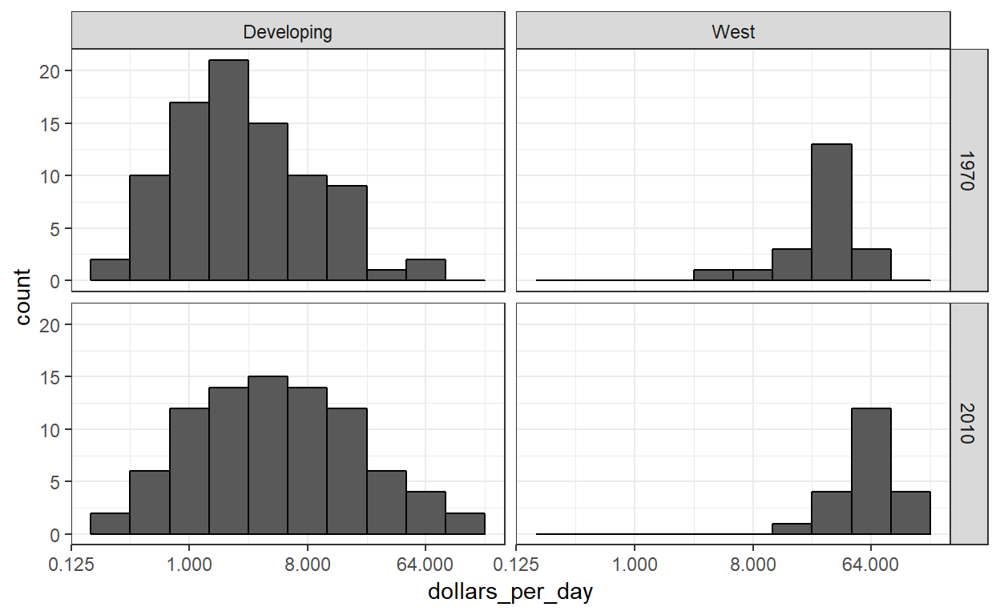
We zien nu dat terwijl de rijke landen procentueel wat rijker zijn geworden, de arme landen meer lijken te zijn verbeterd. We zien vooral dat het aandeel van ontwikkelingslanden waar mensen meer dan $16 per dag verdienen aanzienlijk toeneemt.
Om te zien welke specifieke regio’s het meest verbeterden, kunnen we de boxplots die we hierboven hebben gemaakt met nu 2010 toegevoegd, opnieuw maken
en dan met behulp van facet om de twee jaar te vergelijken:
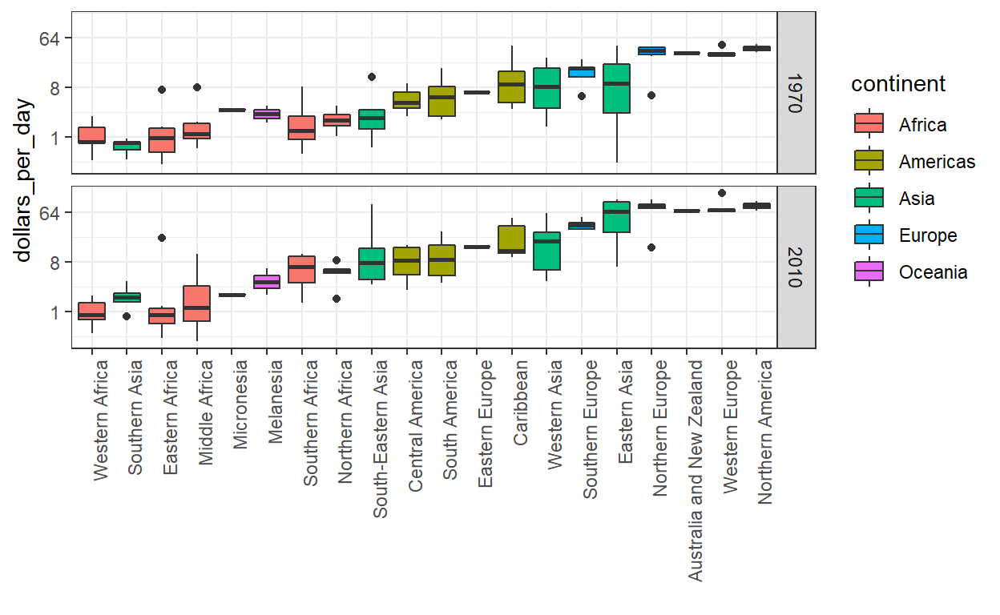
Hier pauzeren we om nog een krachtige ggplot2-functie te introduceren. Omdat we elke regio voor en na willen vergelijken, zou het handig zijn om de 1970 boxplot naast de 2010 boxplot voor elke regio te hebben. Over het algemeen zijn vergelijkingen gemakkelijker wanneer gegevens naast elkaar worden uitgezet.
Dus in plaats van facetteren houden we de gegevens van elk jaar bij elkaar, maar vragen we ggplot om ze afhankelijk van het jaar te kleuren (of te vullen). Ggplot scheidt ze automatisch en plaatst de twee boxplots naast elkaar. Omdat jaar een getal is, maken we er een factor van omdat ggplot automatisch een kleur toewijst aan elke categorie van een factor:
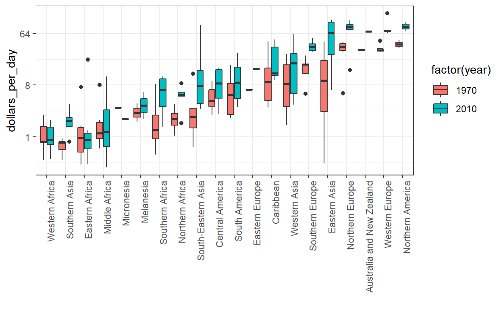
Tot slot wijzen we erop dat als wat we het meest ge?nteresseerd zijn in het vergelijken van voor en na waarden, kan het zinvoller zijn om de verhoudingen, of verschil in de log schaal plot te zetten. We zijn nog steeds niet klaar om te leren om dit te leren coderen, maar hier hoe het figuur eruit zou zien:
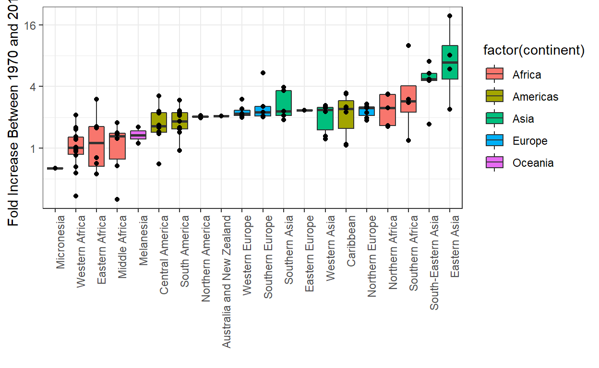
Met behulp van dataverkenning hebben we ontdekt dat de inkomenskloof tussen rijke en arme landen de afgelopen veertig jaar aanzienlijk is gedicht. We gebruikten een reeks histogrammen en boxplots om dit te laten zien. Hier suggereren we een beknopte manier om deze boodschap over te brengen met slechts een plot. We zullen hiervoor subtiele verdelingplots gebruiken.
Laten we beginnen met op te merken dat verdelingplots voor inkomensverdeling in 1970 en 2010 de boodschap afgeven dat de kloof aan het dichten is:
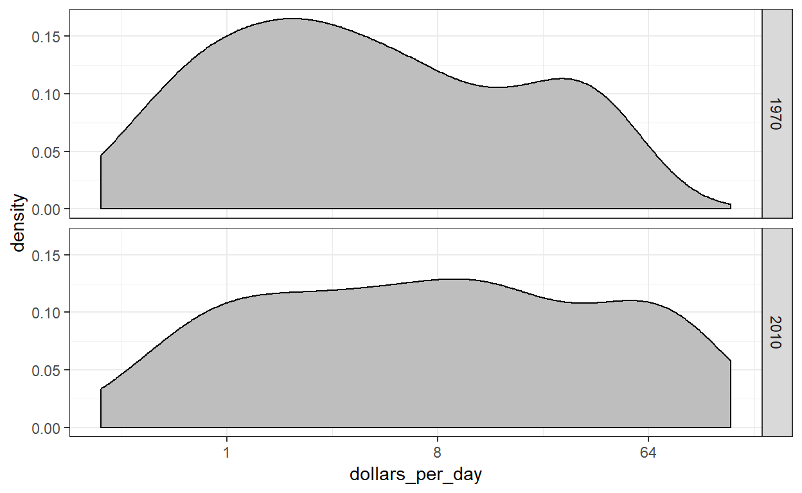
In de 1970 plot zien we twee heldere modi, arme en rijke landen. In 2010 lijkt het erop dat sommige arme landen naar rechts zijn verschoven, dat aangeeft dat de kloof is gedicht.
De volgende boodschap die we moeten uitdragen is dat de reden voor deze verandering in de verdeling is dat arme landen rijker werden in plaats van dat sommige rijke landen armer werden. Om dit te doen hoeven we alleen een kleur toe te wijzen aan de groepen die we hebben ge?dentificeerd tijdens de dataverkenning.
Voordat we dit echter kunnen doen, moeten we leren hoe we deze vlotte dichtheden zo kunnen maken dat de informatie over het aantal landen in elke groep behouden blijft. Om te begrijpen waarom we dit nodig hebben, let dan op de discrepantie in de grootte van elke groep:
| group | n |
|---|---|
| Developing | 87 |
| West | 21 |
maar als twee verdelingen overlappen, is de standaardinstelling dat het gebied dat door elke distributie wordt weergegeven tot 1 wordt opgeteld, ongeacht de grootte van elke groep:
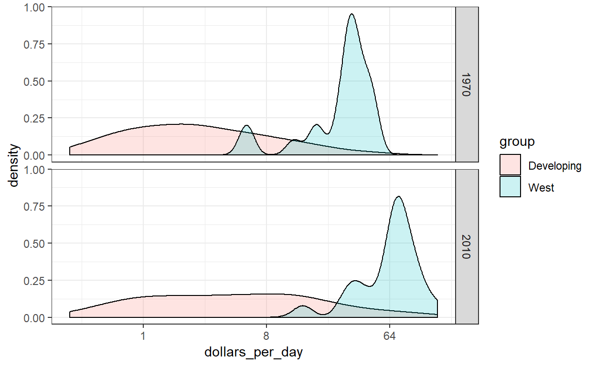
waardoor het lijkt alsof er in elke groep evenveel landen zitten. Om dit te veranderen, zullen we moeten leren om berekende variabelen met de geom_density functie te benaderen.
Om de oppervlakten van deze verdelingen evenredig te laten zijn met de grootte van de groepen, kunnen we de y-aswaarden eenvoudig vermenigvuldigen met de grootte van de groep. Vanuit de geom_density help-file zien we dat de functie, die een variabele genaamd count berekenen, precies dit doet. We willen dat deze variabele op de y-as komt te staan.
In ggplot krijgen we toegang tot deze variabelen door ze te omringen met de naam ... Daarom zullen we de volgende mapping gebruiken:
Nu kunnen we de gewenste plot maken door simpelweg de mapping in het vorige codebrok te veranderen:
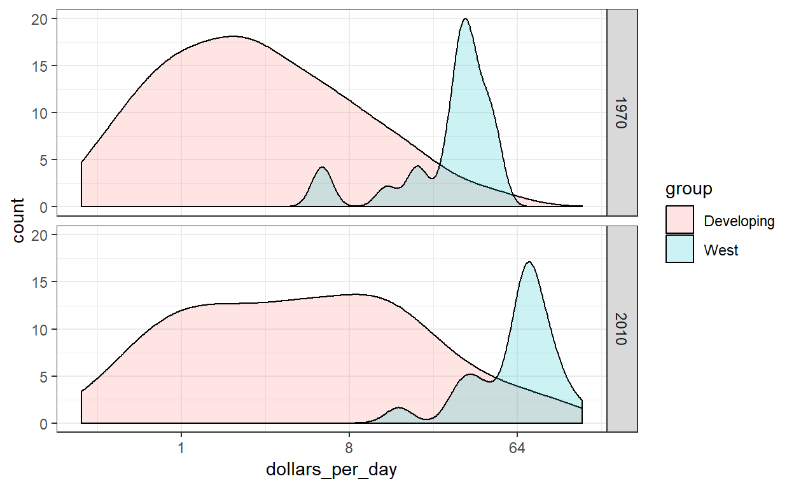
Als we willen dat de verdelingen wordt subtieler worden, gebruiken we het ‘bw’-argument. We probeerden er een paar en kozen voor 0,75:
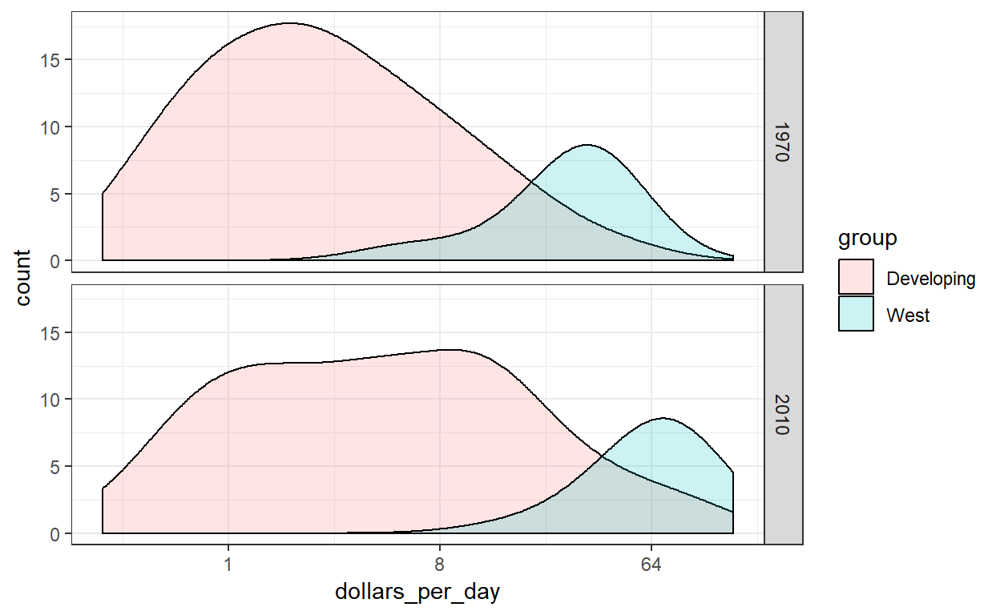
Dee plot laat nu heel duidelijk zien wat er aan de hand is. De verdeling in de ontwikkelingslanden is aan het veranderen. Een derde modus lijkt te bestaan en bestaat uit de landen die de kloof het meest hebben gedicht.
We kunnen dit cijfer zelfs iets informatiever maken. Uit de verkennende gegevensanalyse merkten we dat veel van de landen die het meest verbeterden, afkomstig waren uit Azi?. We kunnen de plot gemakkelijk wijzigen door belangrijke regio’s afzonderlijk weer te geven.
We introduceren de case_when functie die handig is voor het defini?ren van groepen. Het heeft momenteel geen data-argument (dit kan veranderen), dus we moeten de onderdelen van onze gegevenstabel benaderen met behulp van de stip plaatsbewerker:
We maken van deze ‘groep’-variabele een factor om de volgorde van de niveaus te bepalen:
We kiezen deze specifieke volgorde vanwege een reden die later duidelijk wordt.
Nu kunnen we eenvoudig de verdeling voor elk in kaart brengen. We gebruiken kleur' engrootte’ om de toppen duidelijk te laten zien:
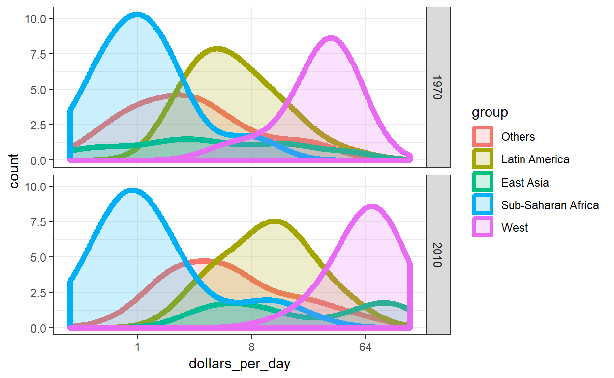
De plot is rommelig en wat moeilijk te lezen. Soms krijg je een duidelijker beeld door de dichtheden op elkaar te stapelen:
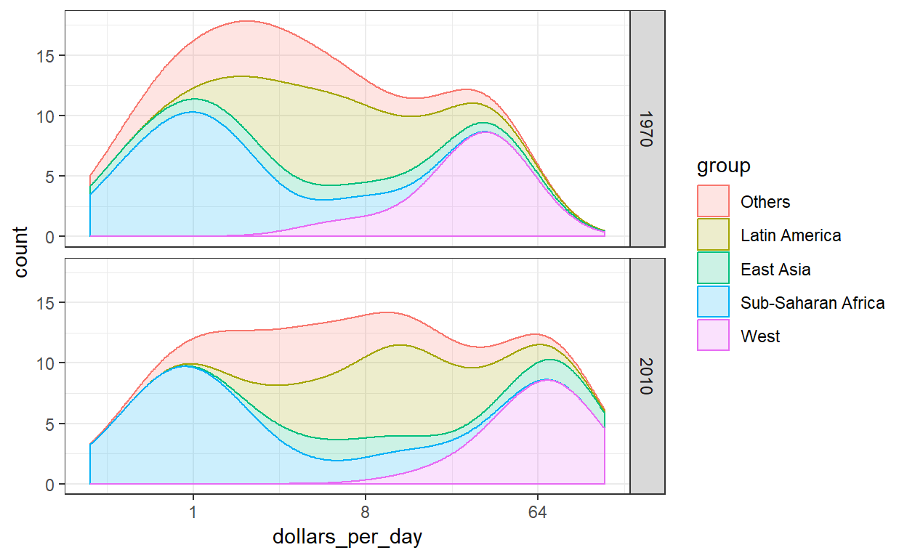
Hier zien we duidelijk dat de verdelingen voor Oost-Azi?, Latijns-Amerika e.a. duidelijk naar rechts verschuiven. Terwijl Afrika bezuiden de Sahara blijft stagneren.
Merk op dat we de niveaus van de groep zo ordenen dat de West verdeling eerst wordt uitgezet, dan Sub-Sahara Afrika. Als we eerst de twee uitersten in kaart brengen, zien we de resterende bimodaliteit beter.
Tot slot merken we op dat deze uitkeringen in alle landen hetzelfde wegen. Dus als het grootste deel van de bevolking zich verbetert, maar in een heel groot land woont, zoals China, zullen we dit misschien niet op prijs stellen. We kunnen de vloeiende verdelingen eigenlijk wegen met behulp van het gewicht in kaart brengen argument. Het plot ziet er dan als volgt uit:
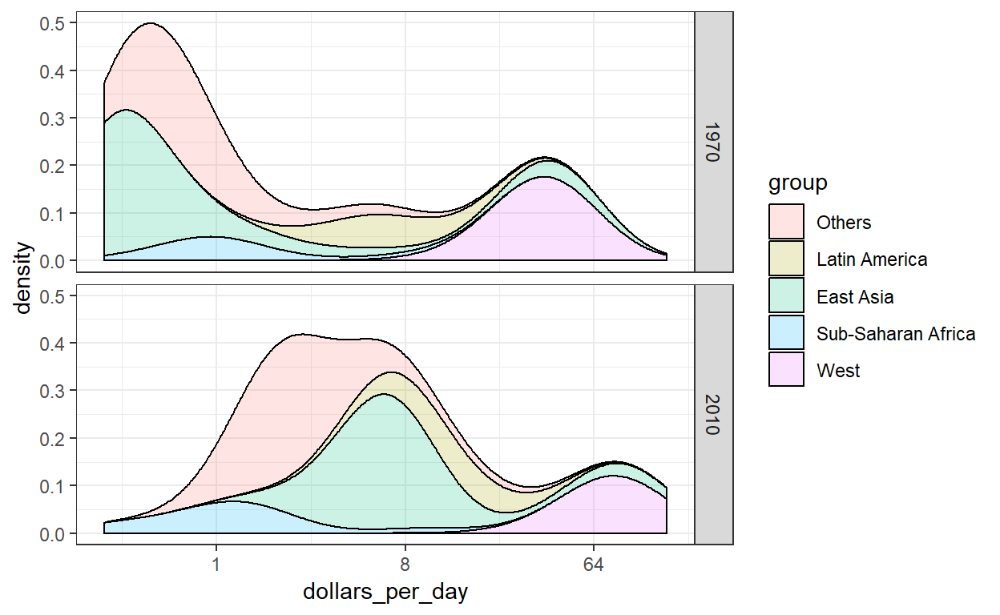
Deze specifieke figuur laat heel duidelijk zien hoe de inkomenskloof wordt gedicht, waarbij de meeste armen in Afrika bezuiden de Sahara blijven.
In deze sectie hebben we regio’s van de wereld met elkaar vergeleken. We hebben gezien dat sommige regio’s het gemiddeld beter doen dan andere. Hier richten we ons op het beschrijven van het belang van verschillen binnen de groepen.
Hier richten we ons op de relatie tussen de overlevingskans van kinderen in een land en het gemiddelde inkomen. We beginnen met het vergelijken van deze hoeveelheden tussen regio’s. We defini?ren nog een paar regio’s:
Vervolgens berekenen we deze hoeveelheden per regio.
# A tibble: 7 x 3
group income infant_survival_rate
<chr> <dbl> <dbl>
1 Sub-Saharan Africa 1.76 0.936
2 Southern Asia 2.07 0.952
3 Pacific Islands 2.70 0.956
4 Northern Africa 4.94 0.970
5 Latin America 13.2 0.983
6 East Asia 13.4 0.985
7 The West 77.1 0.995Dit laat een dramatisch verschil zien. Terwijl in het westen minder dan 0,5 procent van de kinderen sterft, is dat in Afrika bezuiden de Sahara meer dan 6 procent! De relatie tussen deze twee variabelen is bijna perfect lineair
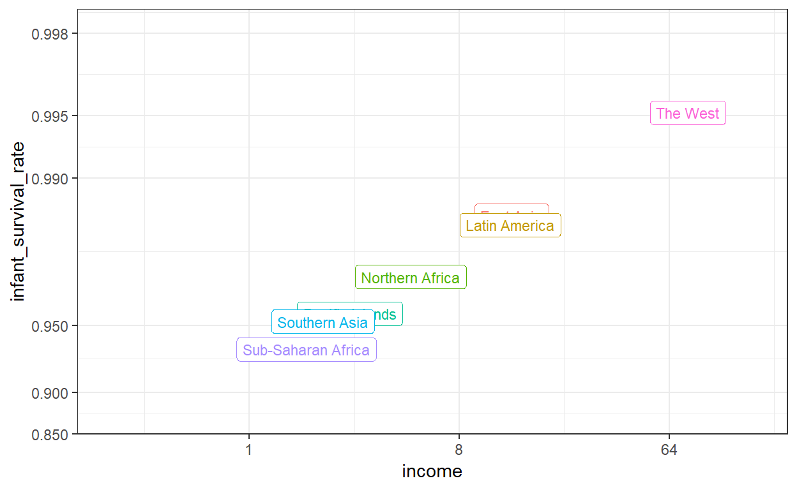
In deze plot introduceren we het gebruik van het limit argument dat laat het bereik van de assen veranderen. We maken het bereik groter dan de gegevensbehoeften omdat we dit plot later zullen vergelijken met een plot met meer variabiliteit; we willen dat de bereiken hetzelfde zijn. We introduceren ook het `breaks’ argument, waarmee we de locatie van de aslabels kunnen instellen. Eindelijk introduceren we een nieuwe transformatie, de logistieke transformatie.
De logistische of logistieke transformatie voor een deel of een koers van \(p\) wordt gedefinieerd als
\[f(p) = \log \left( \frac{p}{1-p} \right)\]
Wanneer \(p\) een proportie of waarschijnlijkheid is, wordt de hoeveelheid die wordt gelogd, \(p/(1-p)\) de odds genoemd. In het geval \(p\) is het aandeel van een kind dat overleefde. De kansen vertellen ons hoeveel meer kinderen worden uitgedreven om te overleven dan om te sterven. De logtransformatie maakt dit symmetrisch. Als de snelheden gelijk zijn, dan is de log odds 0. Bij toe- of afname verandert het in positieve en negatieve stappen.
Deze schaal is handig als we verschillen in de buurt van 0 of 1 willen markeren. Voor overlevingskansen is dit van belang omdat een overlevingsgraad van 90% onaanvaardbaar is, terwijl een overlevingsgraad van 99% relatief goed is. We zouden veel liever een overlevingskans hebben die dichter bij 99,9 procent ligt. We willen dat onze schaal dit verschil benadrukt en de logit doet dit. Merk op dat 99.9/0.1 ongeveer 10 keer groter is dan 99/1, wat ongeveer 10 keer groter is dan 90/10. En door gebruik te maken van de log worden deze wissels steeds groter.
Nu, terug naar onze plot. Kan nu geconcludeerd worden dat op basis van het bovenstaande een land met een laag inkomen een lage overlevingskans zal hebben? Kunnen we concluderen dat alle overlevingskansen in Afrika bezuiden de Sahara lager zijn dan in Zuid-Azi?, dat op zijn beurt lager is dan op de eilanden in de Stille Oceaan, enzovoort?
De conclusie gebaseerd op een plot dat weer wordt gebaseerd op gemiddelden wordt ecologische denkfout genoemd. De bijna perfecte relatie tussen overlevingskansen en inkomen zien we alleen bij de gemiddelden op regionaal niveau. Als we alle gegevens eenmaal hebben getoond, krijgen we een wat ingewikkelder verhaal:
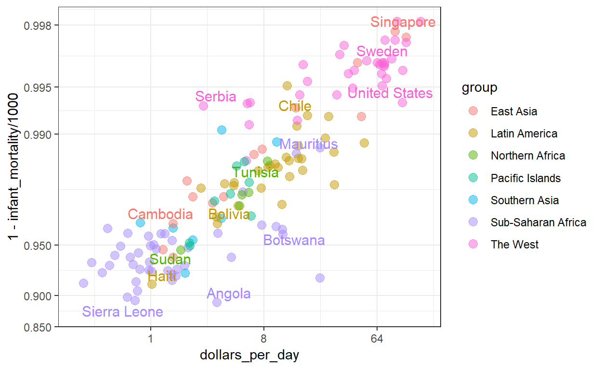
We zien we een grote mate van variabiliteit. We zien dat landen uit dezelfde regio’s heel verschillend kunnen zijn en dat landen met hetzelfde inkomen verschillende overlevingskansen kunnen hebben. Terwijl Afrika bezuiden de Sahara bijvoorbeeld gemiddeld de slechtste gezondheids- en economische resultaten had, is er binnen die groep sprake van grote variabiliteit. Merk bijvoorbeeld op dat Mauritius en Botswana het beter doen dan Angola en Sierra Leone en Mauritius zelfs vergelijkbaar is met Westerse landen.